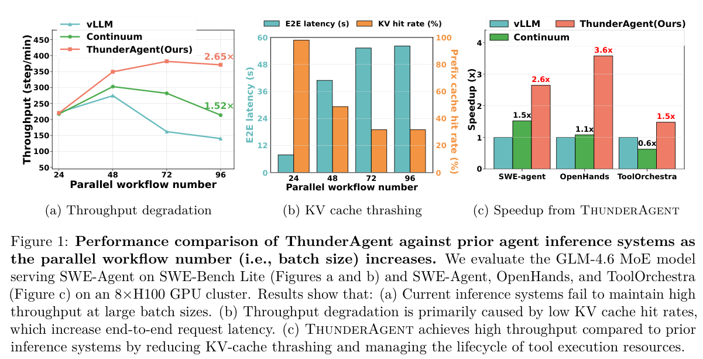
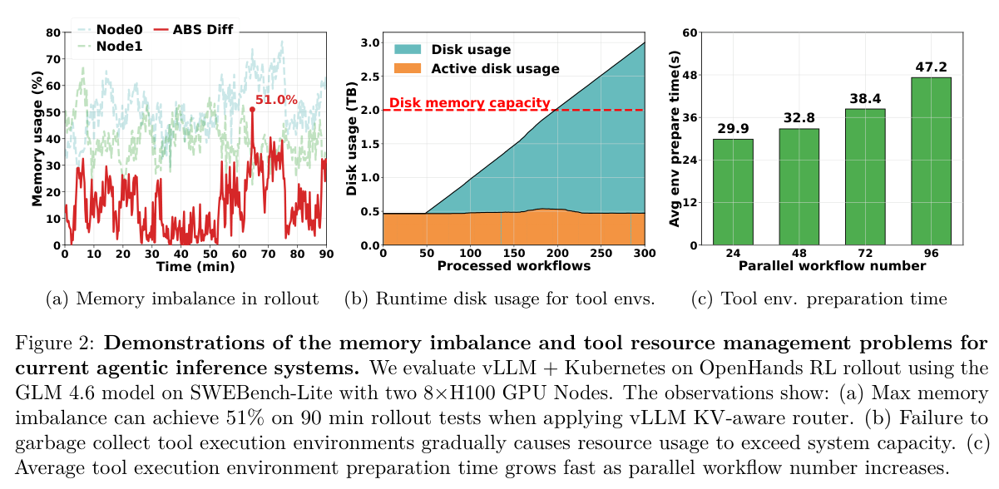
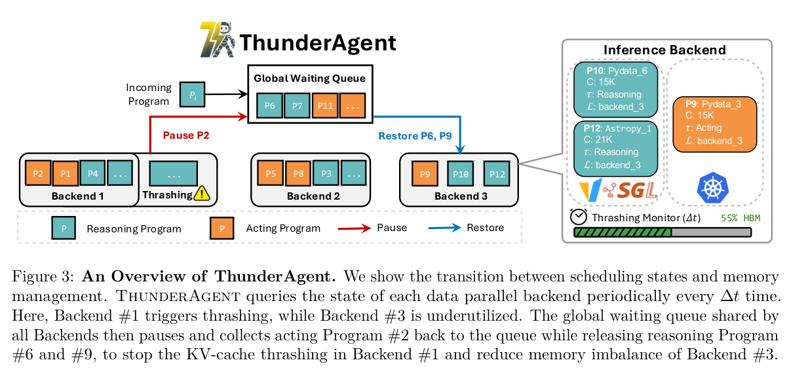
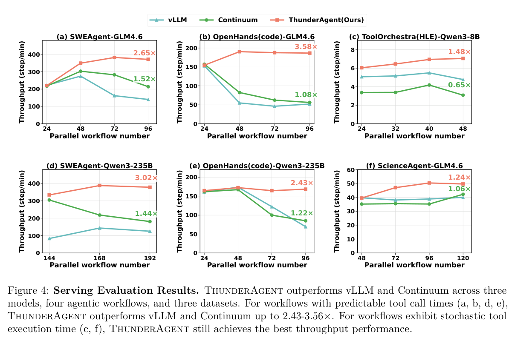
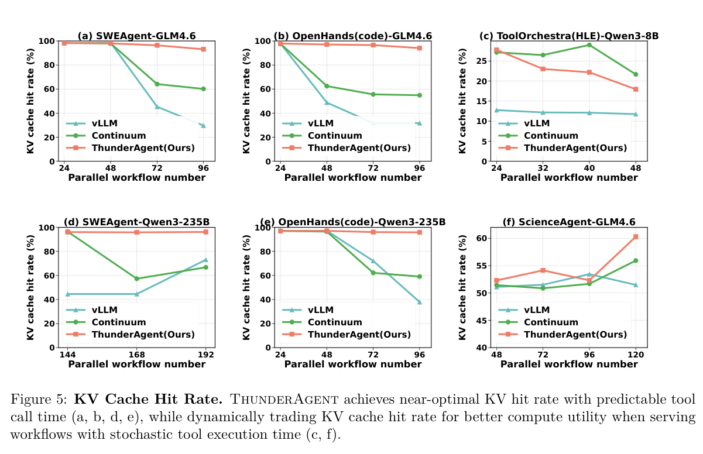
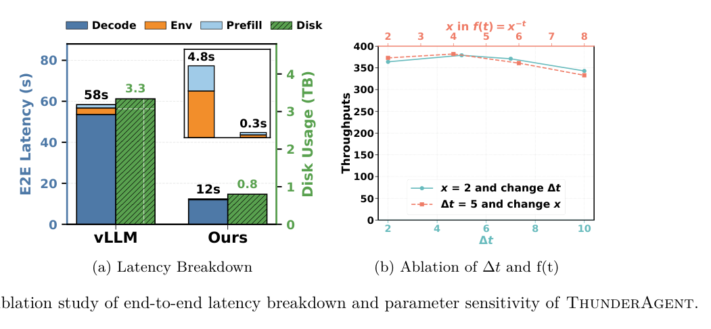
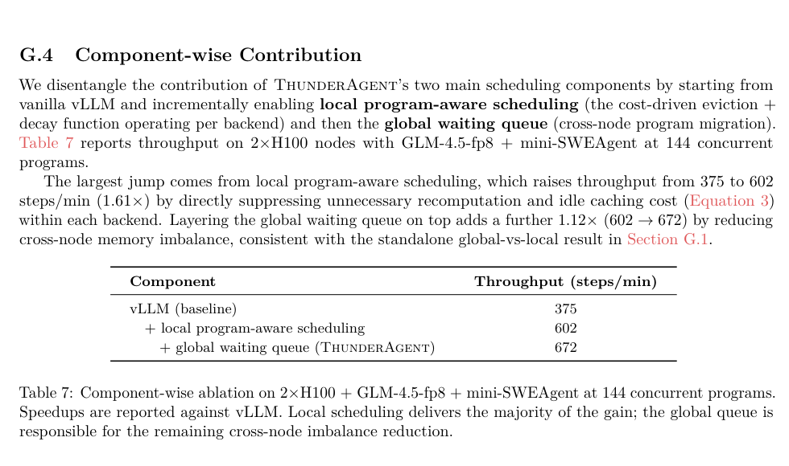

ThunderAgent: A Fast, Simple, and Program-Aware Agentic Inference System（ICML 2026）
作者：Hao Kang、Ziyang Li、Weili Xu、Xinyu Yang、Yinfang Chen、Junxiong Wang、Beidi Chen、Tushar Krishna、Chenfeng Xu、Simran Arora。
ICML 2026 论文。
Motivation
1.1 现有系统缺陷
工业界的 Agent 服务通常把 vLLM/SGLang 和 Kubernetes 拼在一起：前者只调度单轮 LLM 请求，后者只管理工具容器。推理引擎不知道请求属于哪个多轮程序，也不知道工具何时返回；编排器又看不到 GPU 显存和 KV Cache 状态。两套调度器都只看到局部，因而无法管理完整的 Agent 生命周期。
1.2 三痛点
- KV Cache thrashing。 高并发时，工具暂停程序的 KV 会被驱逐；工具返回后只能重新 Prefill，反复驱逐和重算会让端到端延迟最高增加约 7.14×。仅设置 TTL 也不够：当活跃解码任务已经占满 HBM，pinned KV 仍可能被迫让位（刚才Continuum提到的死锁恢复）。
- 跨节点内存不均衡。 KV-aware 路由为命中缓存把同一程序固定在原节点，但 Agent 上下文增长不可预测，容易出现一个节点爆满、另一个节点空闲。论文在 90 分钟 RL rollout 中观察到峰值内存不平衡度约 51%。
- 工具生命周期脱节。 沙箱、磁盘、端口和 API 连接没有和推理程序绑定，导致任务结束后资源泄漏；如果等任务开始后才准备环境，LLM 又会同步等待镜像和依赖安装。

Figure 1 ：并发 workflow 增加后，普通系统的 hit rate 下降、延迟上升，而 ThunderAgent 的吞吐下降较慢。右侧 speedup 是这条链路的端到端结果。

Figure 2 同时展示另外两问题：双节点显存峰值相差约 51%，工具环境磁盘随 workflow 数增长，并发升高还会显著拉长环境准备时间。
Core Design
2.1 Agentic Program：统一调度单位
ThunderAgent 把一个任务从开始到结束的多轮推理、工具调用和环境资源定义为一个 Agentic Program：
P = ⟨ID, c, 𝒯, ℒ, τ, s⟩
| 字段 | 含义 | 调度用途 |
|---|---|---|
| ID | 程序身份 | 关联同一程序的多轮请求 |
| c | 当前上下文 Token 数 | 估计 KV 显存占用 |
| {T} | 工具环境集合 | 管理沙箱、端口和磁盘 |
| {L} | 部署的 backend | 记录节点位置 |
| τ | Reasoning 或 Acting | 判断是否需要 GPU |
| s | Active、Paused 或 Terminated | 驱动暂停、恢复和回收 |
2.2 STP 衡量资源占用
论文用 Space-Time Product 衡量资源占用：
Costx = ∫0txMx(t)dt
总成本近似为：
Costtotal ≈ Costdecode + Costprefill + Costrecompute + Costunused + Costcaching
前两项是有效工作；后三项分别对应 thrashing 重算、跨节点闲置显存，以及 Acting 期间暂时不用却仍保留的 KV。ThunderAgent 提出的三个机制分别针对这三种浪费：active-set 控制减少重算，global queue 减少节点空闲，时间衰减减少无效缓存。
2.3 单节点：状态感知的暂停与恢复
调度器每隔 Δt 检查一次显存工作集，并设置高低水位：超过 λ_max·C 时暂停请求，低于 λ_min·C 时恢复请求。Reasoning 阶段的上下文按完整大小计入，Acting 阶段则随工具等待时间衰减：
Ĉ = ∑p : τ = Rcp + ∑q : τ = Acqf(tq), f(t) = 2 − t
工具运行越久，其 KV 越像暂时不用的缓存，因而更容易被暂停。水位差形成滞环，避免系统在临界显存附近频繁暂停和恢复。
当必须释放 ΔC 显存时，论文给出短上下文优先的理由。长度为 c_i 的程序被驱逐后，重算成本近似满足：
Costrecompute(i) ∝ ci2
因此暂停集合的近似目标是：
minS∑i ∈ Sci2 s.t. ∑i ∈ Sci ≥ ΔC
这意味着应优先暂停 Acting 阶段、且上下文较短的程序；恢复时则优先让需要继续 Reasoning 的短上下文程序上 GPU。论文将规则写成：
$$ S_{pause}(P)=\frac{1}{c_P}+\mathbb{I}(\tau=A),\qquad S_{restore}(P)=\frac{1}{c_P}+\mathbb{I}(\tau=R) $$
指示器函数保证阶段优先，1/c_P 只负责同阶段内的长度排序。被暂停程序会释放 KV，因此恢复时需要重新 Prefill；这不是 GPU 间的 live KV migration。
2.4 多节点：全局程序等待队列
KV-aware 路由坚持节点 locality，但暂停后 KV 已经释放，继续绑定原节点只会放大不均衡。ThunderAgent 将未分配和暂停程序放入 global waiting queue：哪个 backend 有空间，就把程序放到哪个 backend；程序恢复时重新 Prefill，不需要迁移 live KV。

Figure 3 展示了这一闭环，代价是一次重算，收益是把空闲显存重新变成可用。
2.5 Tool Resource Manager：把工具资源纳入生命周期
ThunderAgent 还把 sandbox、磁盘、端口和连接绑定到 Agentic Program。程序接近恢复时可以异步准备环境，避免 LLM 在关键路径上等待；程序进入 Terminated 后由钩子立即回收资源，防止沙箱和磁盘泄漏。这个组件解决的是工具侧等待与资源回收，不能把它的收益误认为 KV thrashing 的收益。
Evaluation
评估覆盖场景
| 场景 | 工作负载与配置 |
|---|---|
| Coding Agent | mini-SWE-agent / SWE-Bench-Lite，OpenHands |
| General Agent（routing workload） | ToolOrchestra 运行 HLE：在搜索、model-as-a-tool reasoning 和最终回答等工具之间路由 |
| Scientific Discovery Agent | OpenHands 运行 ScienceAgentBench：用 Bash、IPython、编辑器等完成数据驱动的科学分析任务 |
| 大模型 | GLM-4.6 355B、Qwen3 235B，FP8、TP=8，运行于 8×H100 节点 |
| 小模型 | Qwen3-8B FP16，单 RTX 5090 |
| RL rollout | 两个 8×H100 节点；与 vLLM + SGLang Gateway 比较 |
| Baseline | vLLM、Continuum；rollout 场景另含 SGLang Gateway |
| 主要指标 | steps/min、KV cache hit rate、端到端阶段延迟、磁盘占用 |
论文将一步定义为一次 Reasoning 加一次 Acting。
端到端 Serving 结果

Figure 4 测试并发 Agent workflow 增加时的 serving throughput。
六个子图覆盖 SWE-agent、OpenHands、ToolOrchestra 和 ScienceAgent，并更换 GLM-4.6、Qwen3-235B、Qwen3-8B 等模型；
横轴是 parallel workflow number，纵轴是 steps/min。低并发时三者差距较小，因为 GPU 尚未出现严重 KV 压力；并发升高后，vLLM 和 Continuum 的吞吐更容易下降，ThunderAgent 相对稳定。
论文高并发结果，相对 vLLM 提升 1.48–3.58×，相对 Continuum 提升 1.17–3.31×。
KV Cache 命中率实验

Figure 5 专门观察并发度上升时三种系统能保留多少可复用前缀：横轴仍是 parallel workflow number，纵轴是 KV cache hit rate，比较 vLLM、Continuum 和 ThunderAgent。
在前一类实验中，ThunderAgent 随并发增加仍接近 100% hit；论文指出 Continuum 可从 90% 以上下降到约 60%，原因是显存不足时不同程序的 active requests 仍会竞争并触发驱逐。在随机工具时长的 c、f 中，ThunderAgent 的 hit rate 反而可能低于 Continuum：
（c，f）是工具时间不固定且变化大的任务，时间衰减会降低长时间 Acting 程序的保留优先级，把显存让给能够继续推理的程序。
RL Rollout
论文在 Table 2 中另测两个 8×H100 节点上的分布式 rollout，使用 GLM-4.6、144 个并发程序，并与 vLLM + SGLang Gateway 比较。
mini-SWE-agent 从 375.4 提升至 671.8 steps/min（1.79×），OpenHands 从 69.1 提升至 270.8（3.92×）。
延迟构成分析与参数敏感性

Figure 6 左图把 OpenHands latency 拆成 Decode、Environment、Prefill、Disk：vLLM 主要耗在 Decode，而 ThunderAgent 通过程序暂停、工具异步准备和减少重复 Prefill，把总延迟压低。论文将其中约 10% 的延迟改善归因于 Tool Resource Manager。
右图改变衰减函数或调度周期，曲线整体较稳定，说明方法不是只在一个 Δt 取值下有效。
消融
只加入单节点内的 program-aware eviction 与 decay 后达到 602（1.61×）；再加入 global waiting queue 达到 672，额外约 1.12×。

Limitations
- 跨节点恢复依赖丢 KV 后重算。上下文很长、节点间链路很快或 Prefill 很贵时，直接传输 KV 是否更好未回答。
- ThunderAgent 与 Continuum 两篇论文在不同场景下报告比对方更优秀的结果，两组实验的代码版本、并发和配置不同。